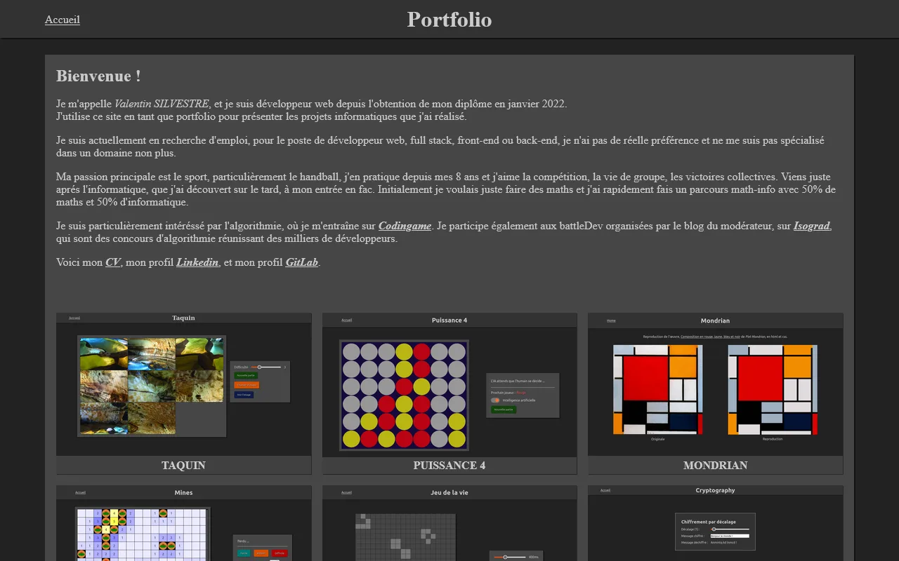

Développeur web
Ce portfolio, développé avec React et Symfony, sera bientôt en ligne.

En attendant le nouveau, voici mon portfolio de 2022 Angular · Taquin, Puissance 4, Démineur, Jeu de la vie et d'autres projets jouables Visiter →Avancement du nouveau portfolio